土台：現在の本番デプロイ 6ad53a050c646359b86ed862 のファイル。変更部分だけを移した日本語10ファイル。本番にはまだ出していません。点検ツール（guard --visual）：PASS（FAIL 0／WARN 0）。英語・韓国語の guides 10ページは見た目の差が0画素。
※この確認版のページには、確認用として検索よけ・フォーム送信止めの設定と、パスの付け替えが入っています（本番用ファイルには入っていません）。
| ファイル | 項目 | 本番 sha1 | 候補 sha1 |
|---|---|---|---|
| privacy/index.html | ①（＋本文整理） | 2a5b62a2d6b4 | 167161c400e4 |
| methodology/index.html | ② | 3ada2b3c47d8 | cb4f951fed0d |
| guides/index.html | ③④ | 9638e46e2d3f | b4fb463c41f8 |
| guides/fundedhive/index.html | ③④ | 323589899b48 | 714b84130135 |
| guides/hantec/index.html | ③④ | 83ff49f234bf | 1007d36086b2 |
| guides/hypernova/index.html | ③④ | b6ca279b0e98 | d7cccce4bf53 |
| guides/propr/index.html | ③④ | e1c10ffb120a | e8b3492c5b7f |
| guides/guides.css | ③④（新しいclassの追加のみ） | 321d8330bdb8 | 77650671456e |
| policy/index.html | ⑤⑦ | 27d91336f327 | 12533e34511d |
| advertising/index.html | ⑥ | a89f054322a8 | 9b001e344562 |
英語・韓国語の guides（見た目が変わらないことの確認用）：en/guides/・ko/guides/・en hantec・ko hantec
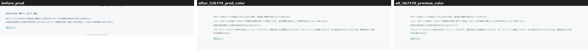
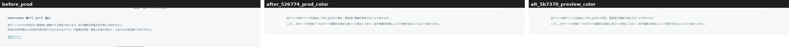
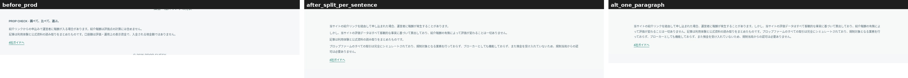
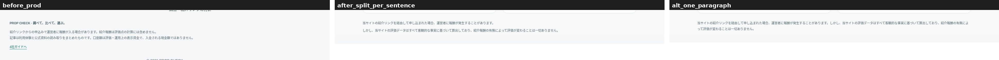
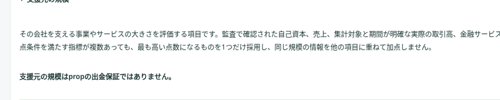
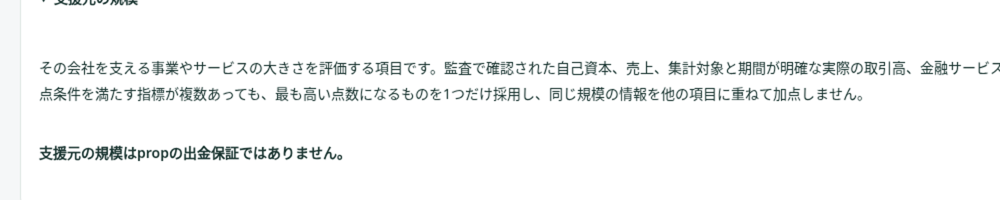
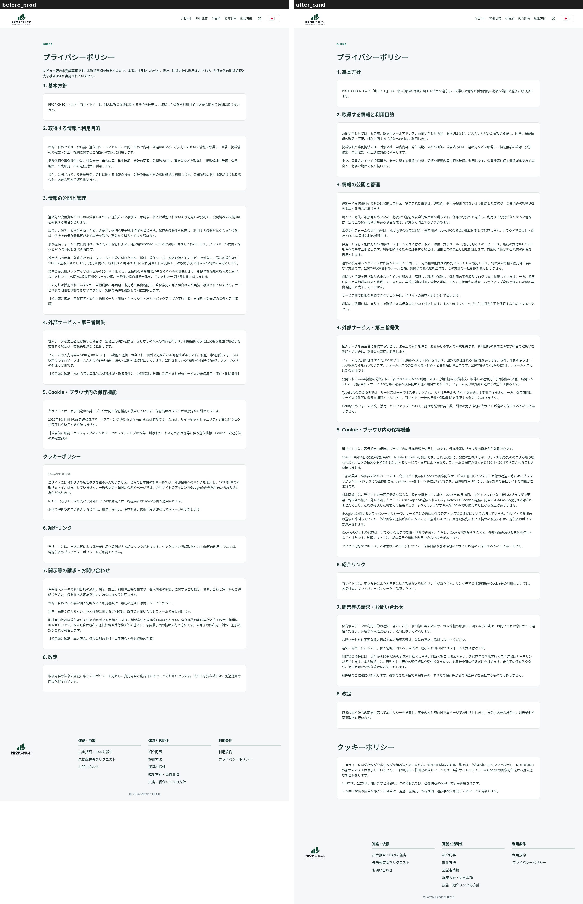
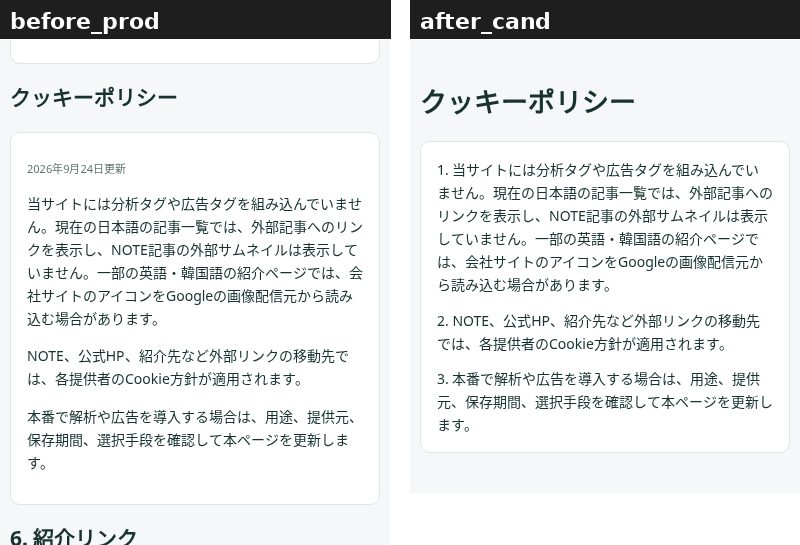
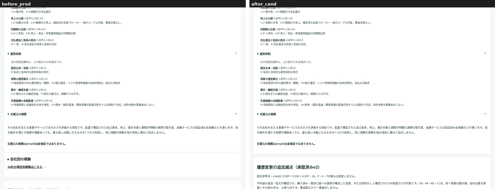
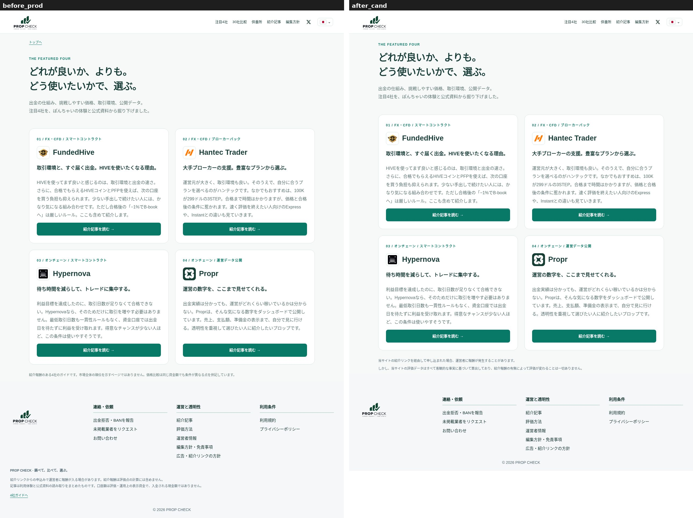
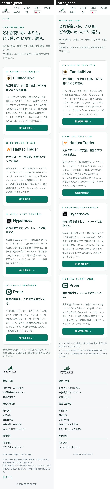
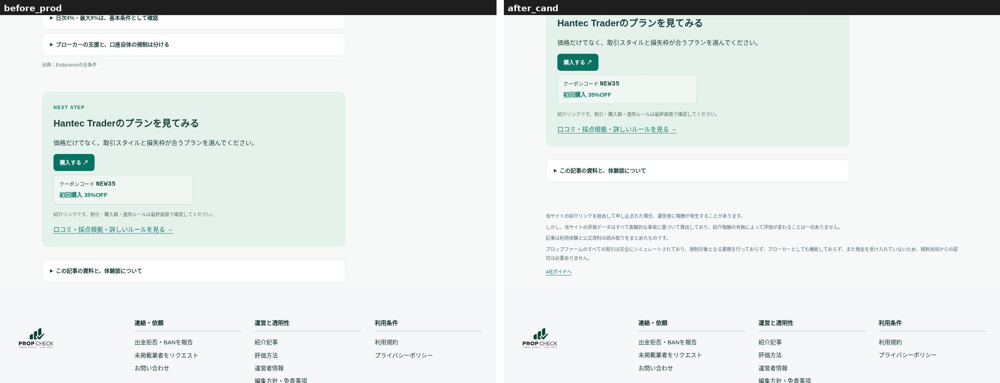
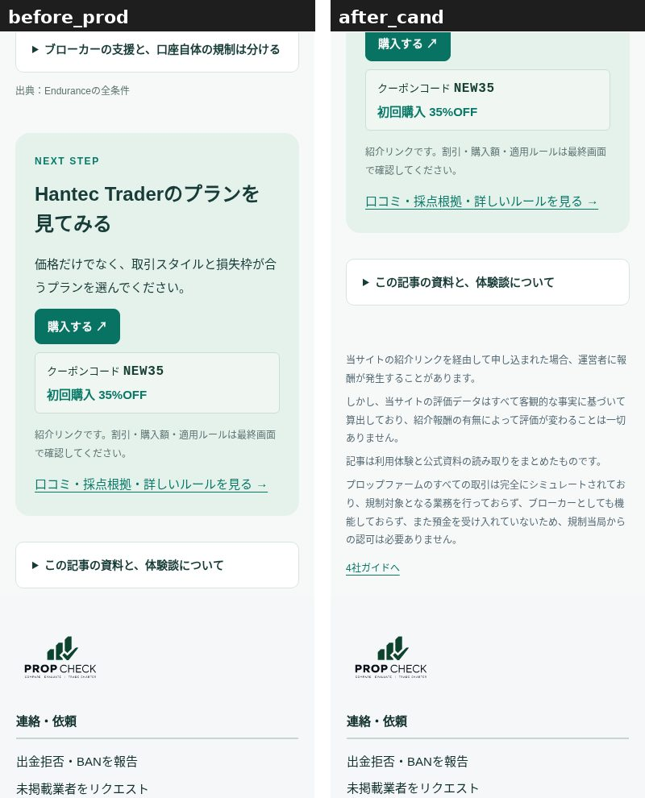
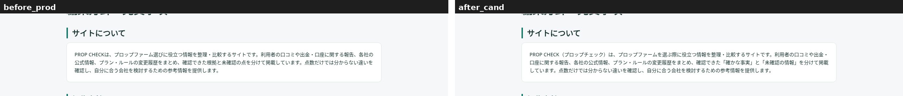
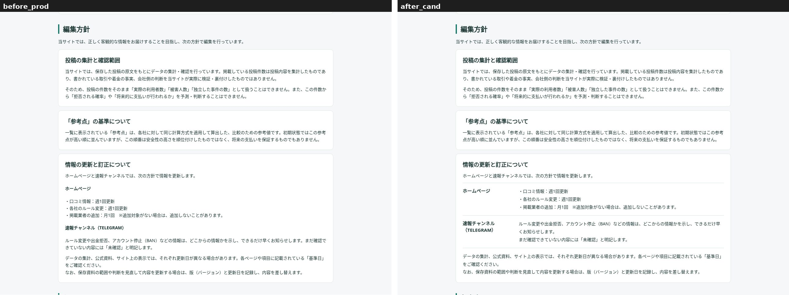
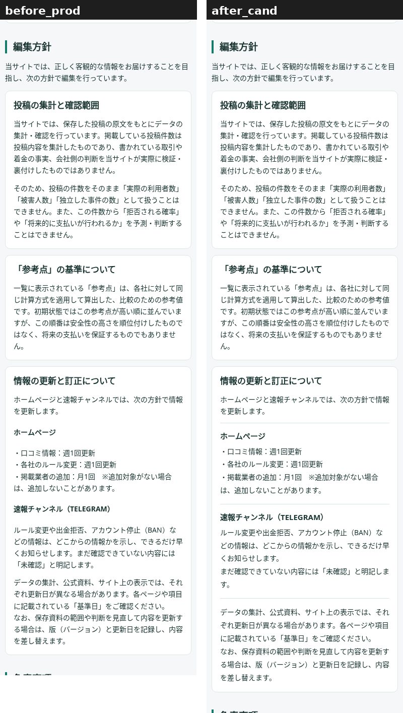
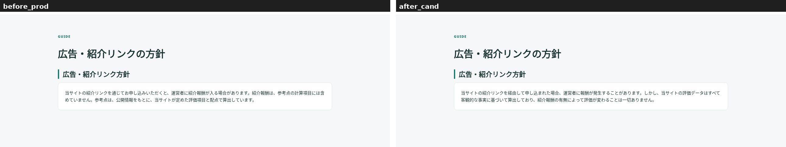
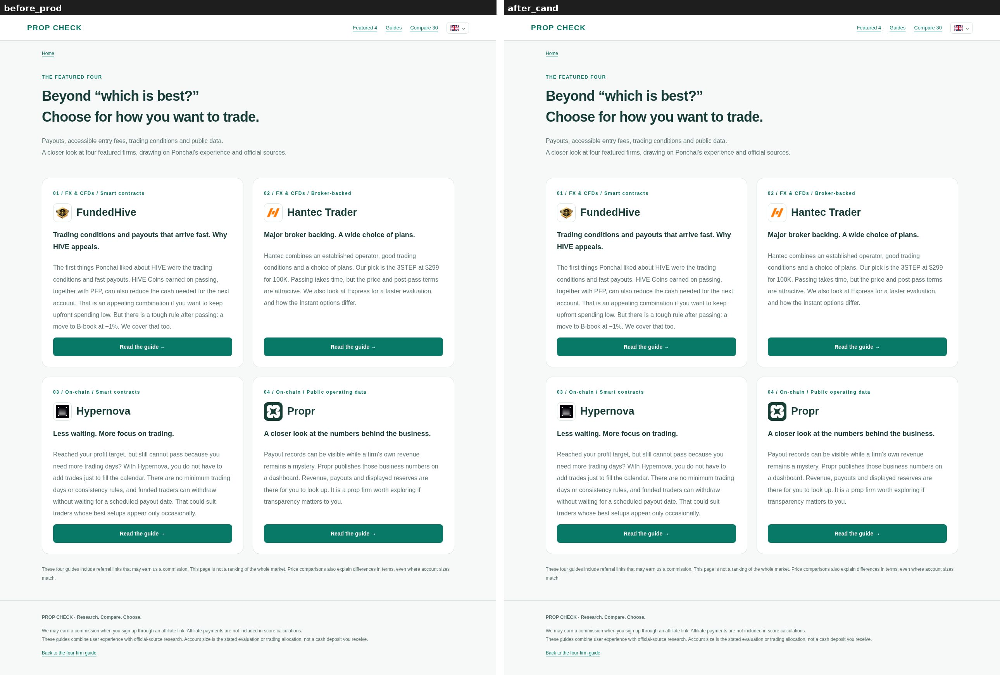
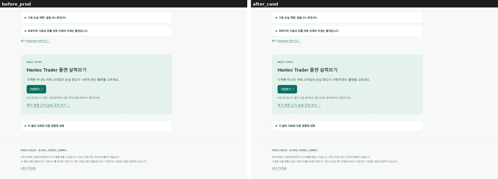